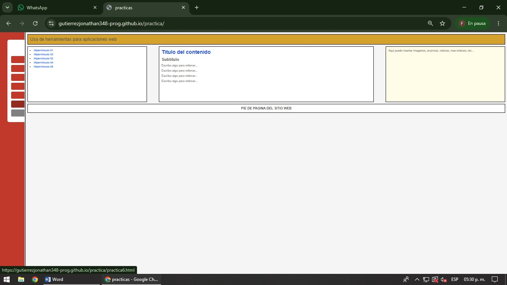

Integración de HTML y CSS
En esta práctica se integran los conocimientos adquiridos de HTML y CSS para construir una página web más completa, organizada y con una apariencia profesional.
Se utilizan encabezados para mostrar títulos y secciones importantes, enlaces mediante la etiqueta <a> para facilitar la navegación y la etiqueta <img> para incorporar imágenes dentro del contenido.
La estructura general de la página se divide en diferentes áreas como encabezado, menú de navegación, contenido principal, sección lateral y pie de página. El diseño visual es controlado mediante el archivo practica6.css, donde se definen colores, tamaños, márgenes, posiciones y la distribución de los elementos.
Esta práctica permite comprender cómo HTML proporciona la estructura del sitio mientras que CSS se encarga de mejorar su apariencia visual y organización.

La integración de HTML y CSS permite desarrollar páginas web completas, organizadas y visualmente atractivas. Mientras HTML define la estructura y el contenido del sitio, CSS aporta el diseño y la presentación, logrando interfaces más profesionales, fáciles de mantener y con una mejor experiencia para el usuario.